읽는 순서
개념편으로 구매 업무의 흐름을 잡고, 실무편으로 현장을 익힌 뒤, 금형·재료·표면처리편에서 원리를 깊게 봅니다. 단계를 누르면 그 단계의 첫 개념이 열립니다.
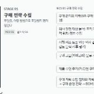
구매 전략 수립개념 16무엇을, 어떤 방법으로 조달할지 먼저 정한다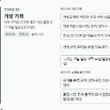
개발 기획개념 16내부 고객의 요구를 목표 사양·품질 요구·개발 일정으로 바꾼다- 협력사 소싱개념 23만들 수 있는 업체를 찾고, 평가하고, 고른다
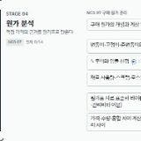
원가 분석개념 16적정 가격의 근거를 원가표로 만든다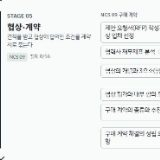
협상·계약개념 16견적을 받고 협상해 합의한 조건을 계약서로 묶는다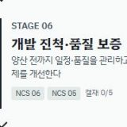
개발 진척·품질 보증개념 5양산 전까지 일정·품질을 관리하고 문제를 개선한다- 양산 조달개념 27필요한 때, 필요한 양을, 요구한 품질로 들어오게 한다
- 원가 절감·협력사 육성개념 25더 싸게 사고, 협력사를 더 강하게 만든다
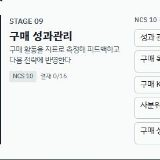
구매 성과관리개념 16구매 활동을 지표로 측정해 피드백하고 다음 전략에 반영한다

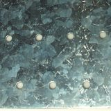
소재·강판개념 9무엇으로 만드는지 안다 — 강판의 규격·품질·가격·유통 구조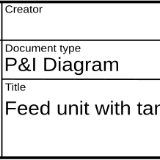
도면 해독개념 9무엇을 만들어야 하는지 도면에서 사양·공차·중요 특성을 읽는다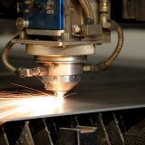
레이저 절단개념 8판재를 원하는 모양으로 자른다 — 품질과 원가는 절단 길이·두께가 정한다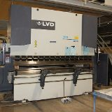
절곡개념 8자른 판을 접어 형상을 만든다 — 전개 길이와 톤수를 계산할 줄 안다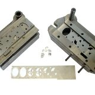
프레스·금형개념 10금형으로 대량을 빠르게 찍어 낸다 — 공정 수·수율·금형비가 단가를 정한다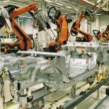
용접·표면처리개념 9부품을 붙이고, 녹슬지 않게 입힌다 — 외주 공정의 품질과 원가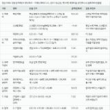
원가계산서 검토개념 10앞에서 익힌 공정 지식으로 견적 가격의 근거를 항목별로 따진다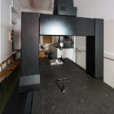
협력사 실사개념 12견적과 서류가 현장과 맞는지 직접 가서 확인한다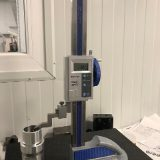
초도품 승인개념 6양산 전에 '이대로 만들어도 된다'를 자료와 샘플로 증명받는다

- 금형 입문개념 6금형이 무엇이고, 어떤 부품을 어떤 물량에서 금형으로 만드는지 안다
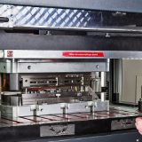
금형 구조와 표준 부품개념 8금형을 열어 보면 무엇이 들어 있는지, 프레스에 어떻게 얹히는지 안다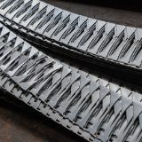
전단 금형개념 7판을 끊어 내는 금형 — 클리어런스가 버·수명·톤수를 정한다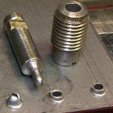
굽힘·성형 금형개념 7판을 굽히고 세우는 금형 — 스프링백과 균열을 어떻게 잡는지 안다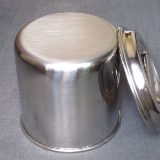
드로잉 금형개념 8평판을 컵·통으로 끌어내는 금형 — 블랭크 크기와 단수가 금형비를 정한다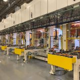
공정 설계와 레이아웃개념 6부품 하나를 몇 공정·몇 스테이션으로 나눌지 정한다 — 금형 크기와 프레스가 따라온다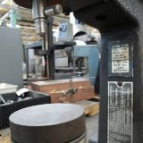
금형 소재·열처리·코팅개념 5무슨 강으로 만들고 어떻게 단단하게 하는지가 수명과 금형비를 가른다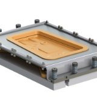
금형 개발 프로세스개념 7사양서에서 금형 승인까지 — 구매가 일정·품질·변경을 관리하는 길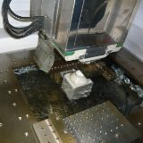
금형비와 금형 관리개념 7금형비를 따지고, 양산 내내 금형을 지키고 고치고 넘기고 폐기한다
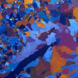
재료 입문개념 5금속을 원자 배열·결정립·결함으로 보면 성질이 왜 그런지 보인다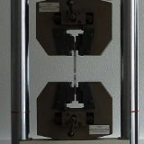
기계적 성질개념 6인장·경도 시험값을 읽고, 숫자가 가공과 불량에 어떻게 이어지는지 안다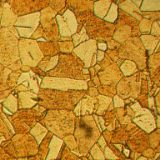
강화·가공 경화·풀림개념 6금속을 단단하게 만드는 방법과, 가공으로 굳은 소재를 다시 무르게 하는 방법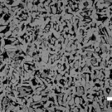
철강 조직과 열처리개념 7탄소량과 냉각 속도가 조직을 정하고, 조직이 강도·경도·인성을 정한다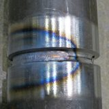
철강 재료의 종류개념 8탄소강·고장력강·스테인리스·주철 — 강종 이름 뒤의 성분과 쓰임새를 안다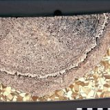
비철 금속개념 7알루미늄·구리·기타 금속의 계열·질별·가공 주의점과 가격 구조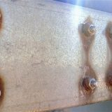
부식과 방식개념 7녹이 생기는 원리를 알면 도금·재질·설계 사양을 근거 있게 정할 수 있다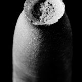
파괴·피로·열적 성질개념 7부품이 왜 깨지는지 — 파면·피로·저온·열을 읽고 클레임에 대응한다- 재료 선정·사양·관리개념 7재료를 고르고, 사양서에 적고, 바꿀 때 승인하고, 들어올 때 확인한다

 표면처리 입문개념 6표면 수 μm에 부품의 수명·외관·기능이 걸려 있다 — 무엇을 왜 입히는지 안다
표면처리 입문개념 6표면 수 μm에 부품의 수명·외관·기능이 걸려 있다 — 무엇을 왜 입히는지 안다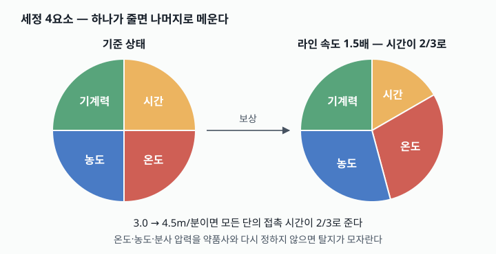
전처리와 화성 처리개념 6피막 불량의 절반은 피막 아래에서 시작된다 — 씻고, 벗기고, 붙을 자리를 만든다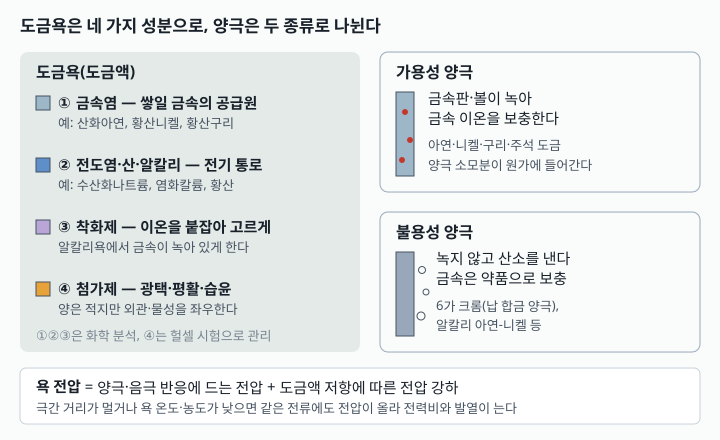
전기도금의 원리개념 7전류가 금속 이온을 부품 표면에 쌓는다 — 두께·분포·수소를 숫자로 읽는다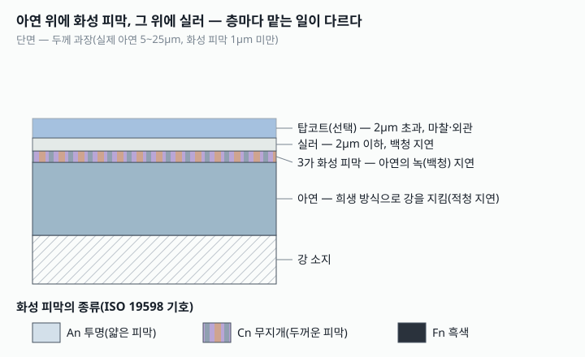
도금의 종류개념 7아연·아연 합금·니켈·크롬·무전해·주석, 그리고 용융아연도금과 아연 플레이크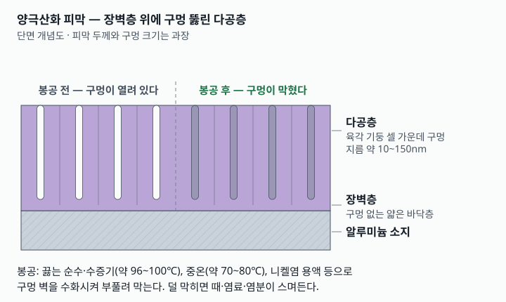
양극산화와 특수 처리개념 6알루미늄 양극산화, 스테인리스 마감, 흑색 산화, 도금·컬러 강판, PVD·용사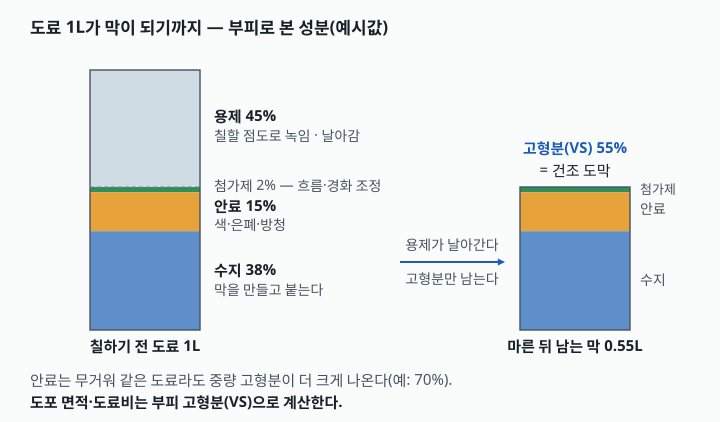
도료와 도막개념 7도료는 수지·안료·용제·첨가제의 설계품이다 — 성분이 성능과 값을 정한다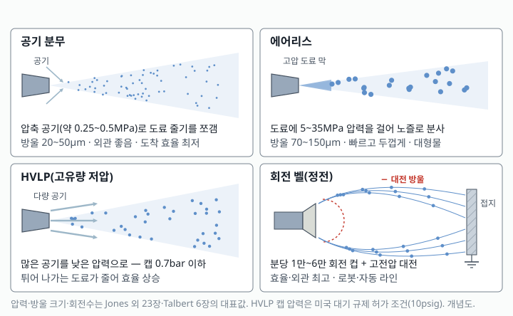
도장 공정개념 7칠하고 굳히는 방식이 품질과 도료 손실을 정한다 — 스프레이·분체·전착·경화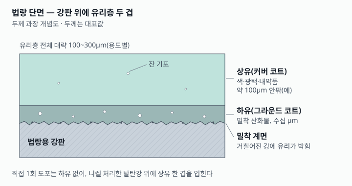
법랑개념 6유리를 강판에 녹여 붙인다 — 법랑용 강판·유약·소성·결함을 안다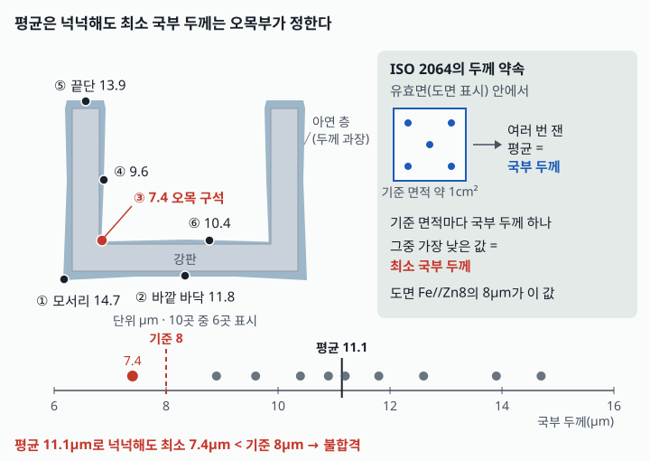
품질·원가·환경개념 7시험값을 읽고, 단가를 따지고, 업체를 평가하고, 규제를 지킨다
읽고, 풀고,
결재받는다
개념마다 결재란이 있습니다. 본문을 읽으면 학습 도장이, 확인 퀴즈를 맞히면 통과 도장이 찍히고, 둘 다 찍히면 결재 완료입니다.
- 읽기
본문·핵심 정리·현장 사례를 읽습니다. 연결된 개념이 다른 권으로 이어 줍니다.
- 풀기
개념마다 확인 퀴즈 두 문항, 계산이 필요한 개념에는 실습이 붙어 있습니다.
- 결재
학습과 퀴즈 도장이 모두 찍히면 완료. 진도는 로그인 없이 이 브라우저에만 저장됩니다.